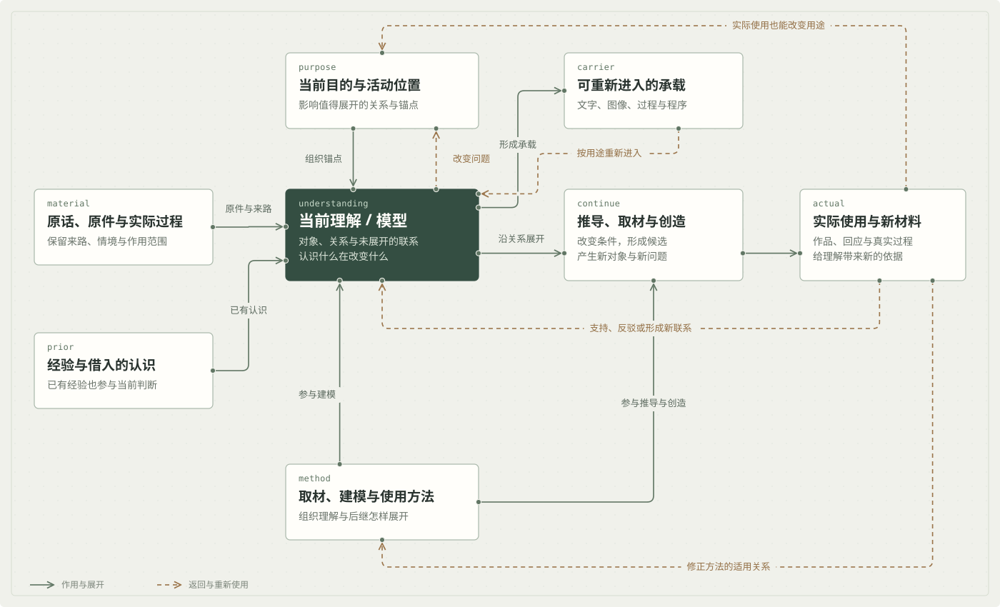
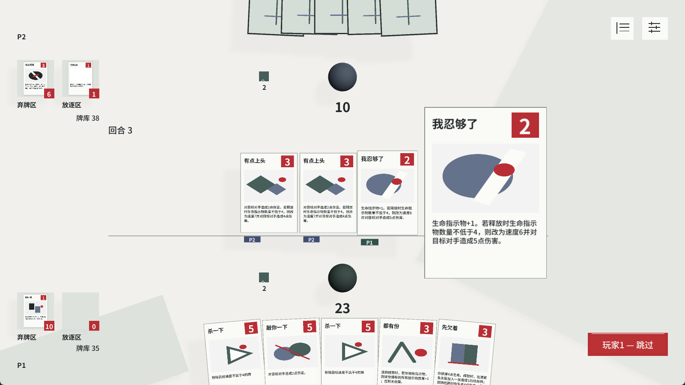

牌手与当前窗口
生命、手牌、指示物、可见信息。
决定现在能释放什么让理解，能够继续推导与创造。
原件、经验、目的与方法共同参与理解。沿具体关系改变条件，可以提出候选、创造对象与发现新问题；实际使用再返回理解、用途与方法。

生命、手牌、指示物、可见信息。
决定现在能释放什么牌、目标、速度、已锁定模式；双方可以继续回应。
回应改变先后与作用对象按相应时点读取条件，改变生命、资源、手牌与条上对象。
改变下一次行动的条件资源数相同，释放时读取和结算前读取可能产生不同结果。这个时点既影响出牌策略，也接到规则文案、模式提示与执行方式。
以 Not So Fast!的真实规则做推演。模型同时保留资源、事件顺序和已经确定的模式，就能解释一个只看当前数量时容易误判的情境。
自己有 3 枚生命指示物；「换张看看」已在速度条，结算时获得 1 枚，本例不支付抽牌。此时释放「我忍够了」。
「我忍够了」读取释放条件，确定基础模式，速度为 2。
模式已确定速度 3 的「换张看看」先结算，生命指示物增加 1。
当前资源改变「我忍够了」读取已保存的模式，执行积累，最终为 5 枚。
保留释放时的历史当前数值与已经确定的模式，一起决定接下来的结果。
资源取得的先后，与攻击模式能否成立直接相接。
规则文案、模式提示与 AI 决策，都需要保留这次释放的确定结果。
一个时点关系，接出操作策略、界面表达和实现职责；还可以继续提出新问题：哪些效果应在释放时确定，哪些适合到结算前再判断？不同选择又会形成怎样的回应空间？
制作卡牌时，我发现“使用同一份数据”还不足以让不同位置承接完整牌体。由此继续追问：哪些作用需要共同支撑，哪些形式应该留给内容改变？

组牌、手牌、速度条与详情各自打印布局时，同一牌张的身份与阅读关系仍可能分散。共同支撑需要进入这些实际用途。
我把背纹重新开放为可设计内容；框架承接牌张身份、当前允许呈现的信息与使用关系，不能由现有部件的数量定义。
让作者母版接到各位置的呈现，牌外信息由场景承接。新内容再带回新的阅读需求，继续修正支撑方式。
这次制作也改变了方法：框架需要说明内容怎样继承共同关系，又怎样组合、改变和发展它；具体内容与实际使用会反过来揭示框架缺少什么。
我希望这种建模能继续用于不同游戏，寻找设计锚点、问题与改进方向。以下节选来自原创游戏、既有机制与复刻源码的研究。
当前资源与行动窗口决定可用模式；释放时确定的模式进入条上对象。
双方改变速度和目标，使同一批待结算牌出现不同顺序。
生命、手牌和积累留下新的条件，影响下一次选择。
什么值得提前确定，什么适合留给结算时判断？两者怎样形成不同的回应空间？
金币、格位、持有资源与时机限制选择；购入、上场与触发各有作用。
当轮阵容形成战斗贡献，结果带回下一次准备所需的信息。
保留下来的对象、成长与取得历史，改变下一轮的机会与取舍。
相同的最终属性能否代表相同价值？取得路径、持续能力与后续机会还保留了哪些差别？
供应、预算、合法位置、朝向、装备与历史共同影响当前配置。
个体战斗先产生对应结果；满足条件后进入协防，继续记录参与与收益来源。
分开处理原战与协防结果，接到存活、奖励、资源返还和后继准备。
同样的终局配置，为什么可能产生不同收益？哪些历史必须一直保留到结算？
对游戏形成模型后，可以继续组织 AI 的信息、行动、推演与决策。同样的思想也用于研究取材和图像创作：先理解当前对象及目标，再选择操作与后继。
区分公开状态、手牌、未知信息与历史；让判断使用当前位置能取得的材料。
保留合法行动、作用对象、代价与窗口；让行动对应真实规则和工具。
按事件与已确定条件推演结果，比较当前收益与之后的可能性。
围绕对局、教学或辅助设计等用途，决定搜索方向、取舍与反馈方式。
concept-workflow 将其中一部分整理为可使用的 AI 工作方法：形成理解、组织计划、制作内容，反馈回到实际受到影响的关系和安排。
支付后记录两组收益，按有效条目继续结算。
首次支付后剩 2；撤掉第二次操作及其回声，保留首次 +5 与 +1。
公开包包含方法、参考与初作／后继文稿。上例是一次按方法完成的任务及修正记录。
从建模方法，回到具体玩法